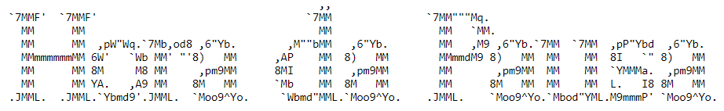

import pandas as pd5 CD: Visualização
6 Introdução
Adicionar/Editar: Motivação da aula
Adicionar/Editar: TOC dos temas da aula (pra ajudar os alunos a se acharem na aula)
Adicionar/Editar: Texto (enxuto, objetivo) com os objetivos de aprendizagem principais (o que, principalmente, os alunos tem que sair dessa aula sabendo)
Adicionar/Editar: Ao longo da aula: adicionar mais referências, especialmente sobre onde expandir os conhecimentos sobre cada tema
Adicionar/Editar: Na mesma ideia das aulas passadas, vamos explicar teoricamente o que é uma visualização (tanto como tabela ou gráfico), e depois falar sobre os "tipos" de visualizações que queremos criar
6.1 Visualização de Dados
Adicionar/Editar: explicar o objetivo. brevemente falar sobre tabelas de sumarização (e seus componentes) e gráficos (e seus componentes)
6.2 Sumarização com Pandas
Uma maneira de visualizar dados é criar resumos, calcular estatísticas descritivas que contem informações chave sobre os dados, de maneira concisa.
Estes links tem alguns tutoriais interessantes:
- https://pandas.pydata.org/docs/getting_started/intro_tutorials/06_calculate_statistics.html
- https://www.geeksforgeeks.org/pandas-groupby-summarising-aggregating-and-grouping-data-in-python/
Vamos começar carregando dados:
Adicionar/Editar: salvar o dataframe em assets/materials
df = pd.read_csv("https://drive.google.com/uc?id=1u2MEH_DTBMyG3clVKA4Q5FEpntLZNKeE")
df| Unnamed: 0 | Name | Location | Year | Kilometers_Driven | Fuel_Type | Transmission | Owner_Type | Mileage | Engine | Power | Seats | New_Price | Price | |
|---|---|---|---|---|---|---|---|---|---|---|---|---|---|---|
| 0 | 0 | Maruti Wagon R LXI CNG | Mumbai | 2010 | 72000 | CNG | Manual | First | 26.6 km/kg | 998 CC | 58.16 bhp | 5.0 | NaN | 1.75 |
| 1 | 1 | Hyundai Creta 1.6 CRDi SX Option | Pune | 2015 | 41000 | Diesel | Manual | First | 19.67 kmpl | 1582 CC | 126.2 bhp | 5.0 | NaN | 12.50 |
| 2 | 2 | Honda Jazz V | Chennai | 2011 | 46000 | Petrol | Manual | First | 18.2 kmpl | 1199 CC | 88.7 bhp | 5.0 | 8.61 Lakh | 4.50 |
| 3 | 3 | Maruti Ertiga VDI | Chennai | 2012 | 87000 | Diesel | Manual | First | 20.77 kmpl | 1248 CC | 88.76 bhp | 7.0 | NaN | 6.00 |
| 4 | 4 | Audi A4 New 2.0 TDI Multitronic | Coimbatore | 2013 | 40670 | Diesel | Automatic | Second | 15.2 kmpl | 1968 CC | 140.8 bhp | 5.0 | NaN | 17.74 |
| ... | ... | ... | ... | ... | ... | ... | ... | ... | ... | ... | ... | ... | ... | ... |
| 6014 | 6014 | Maruti Swift VDI | Delhi | 2014 | 27365 | Diesel | Manual | First | 28.4 kmpl | 1248 CC | 74 bhp | 5.0 | 7.88 Lakh | 4.75 |
| 6015 | 6015 | Hyundai Xcent 1.1 CRDi S | Jaipur | 2015 | 100000 | Diesel | Manual | First | 24.4 kmpl | 1120 CC | 71 bhp | 5.0 | NaN | 4.00 |
| 6016 | 6016 | Mahindra Xylo D4 BSIV | Jaipur | 2012 | 55000 | Diesel | Manual | Second | 14.0 kmpl | 2498 CC | 112 bhp | 8.0 | NaN | 2.90 |
| 6017 | 6017 | Maruti Wagon R VXI | Kolkata | 2013 | 46000 | Petrol | Manual | First | 18.9 kmpl | 998 CC | 67.1 bhp | 5.0 | NaN | 2.65 |
| 6018 | 6018 | Chevrolet Beat Diesel | Hyderabad | 2011 | 47000 | Diesel | Manual | First | 25.44 kmpl | 936 CC | 57.6 bhp | 5.0 | NaN | 2.50 |
6019 rows × 14 columns
6.2.1 Sumarisando o dataframe como um todo
Existem algumas funções que combinam várias informações sobre todas as variáveis ao mesmo tempo.
df.info()<class 'pandas.core.frame.DataFrame'>
RangeIndex: 6019 entries, 0 to 6018
Data columns (total 14 columns):
# Column Non-Null Count Dtype
--- ------ -------------- -----
0 Unnamed: 0 6019 non-null int64
1 Name 6019 non-null object
2 Location 6019 non-null object
3 Year 6019 non-null int64
4 Kilometers_Driven 6019 non-null int64
5 Fuel_Type 6019 non-null object
6 Transmission 6019 non-null object
7 Owner_Type 6019 non-null object
8 Mileage 6017 non-null object
9 Engine 5983 non-null object
10 Power 5983 non-null object
11 Seats 5977 non-null float64
12 New_Price 824 non-null object
13 Price 6019 non-null float64
dtypes: float64(2), int64(3), object(9)
memory usage: 658.5+ KBdf.describe()| Unnamed: 0 | Year | Kilometers_Driven | Seats | Price | |
|---|---|---|---|---|---|
| count | 6019.000000 | 6019.000000 | 6.019000e+03 | 5977.000000 | 6019.000000 |
| mean | 3009.000000 | 2013.358199 | 5.873838e+04 | 5.278735 | 9.479468 |
| std | 1737.679967 | 3.269742 | 9.126884e+04 | 0.808840 | 11.187917 |
| min | 0.000000 | 1998.000000 | 1.710000e+02 | 0.000000 | 0.440000 |
| 25% | 1504.500000 | 2011.000000 | 3.400000e+04 | 5.000000 | 3.500000 |
| 50% | 3009.000000 | 2014.000000 | 5.300000e+04 | 5.000000 | 5.640000 |
| 75% | 4513.500000 | 2016.000000 | 7.300000e+04 | 5.000000 | 9.950000 |
| max | 6018.000000 | 2019.000000 | 6.500000e+06 | 10.000000 | 160.000000 |
6.2.2 Sumarisando variáveis categóricas
Para variáveis categóricas, podemos ver a frequência de cada categoria.
counts = df['Fuel_Type'].value_counts(normalize = True)
print(counts)
counts.plot(kind = "bar")Fuel_Type
Diesel 0.532480
Petrol 0.456222
CNG 0.009304
LPG 0.001661
Electric 0.000332
Name: proportion, dtype: float64
6.2.3 Sumarisando variáveis contínuas
As estatísticas descritivas principais estão na tabela “describe”, mas também podem ser obtidas individualmente.
print(df['Price'].mean()) # Também existe .sum(), .min(), etc.
df['Price'].describe()9.47946835022429count 6019.000000
mean 9.479468
std 11.187917
min 0.440000
25% 3.500000
50% 5.640000
75% 9.950000
max 160.000000
Name: Price, dtype: float64De modo mais geral, mas menos mensurável, podemos olhar para a distribuição da variável como um todo, e uma visualização simplificada com boxplots.
df['Price'].plot.density()
df['Price'].plot.box()
6.2.4 Analisando grupos nos dados
Adicionar/Editar: falar bem mais, falar das funções de aggregate que não falamos na aula 3
Podemos estar interessado em fazer esses resumos mas utilizando grupos nos dados. Veja este tutorial para mais informações.
df.groupby('Fuel_Type')['Price'].sum()Fuel_Type
CNG 196.94
Diesel 41154.14
Electric 25.75
LPG 24.87
Petrol 15655.22
Name: Price, dtype: float64df.plot.box(column = 'Price', by = 'Fuel_Type')Price Axes(0.125,0.11;0.775x0.77)
dtype: object
Adicionar/Editar: Escolha uma frase remetendo pausa e tire print de alguma arte dela em https://patorjk.com/software/taag/. Exemplo:

6.3 Gráficos com o Matplotlib
Adicionar/Editar: cuidado pra não deixar a aula muito expositiva/densa. conteúdos de decoreba, mova para a seção de Extras
6.3.1 Anatomia e Estilo de Programação
Adicionar/Editar: Falar mais sobre os componentes de um gráfico, para setar o contexto para dividir as funções do matplotlib em "caixinhas"
O Matplotlib exibe seus dados em Figuras (por exemplo, janelas, widgets Jupyter, etc.), cada uma das quais pode conter um ou mais Eixos, uma área onde pontos podem ser especificados em termos de coordenadas x-y (ou theta-r em um gráfico polar, x-y-z em um gráfico 3D, etc.). A maneira mais simples de criar uma Figura com um Eixo é usando pyplot.subplots.
Alguns links úteis:
- https://matplotlib.org/stable/users/explain/quick_start.html.
- https://matplotlib.org/3.8.3/users/index.html.
- https://matplotlib.org/cheatsheets/_images/cheatsheets-1.png.
- https://matplotlib.org/3.8.3/index.html.
- https://matplotlib.org/3.8.3/api/index.html.
6.3.2 Anatomia de uma figura

6.3.3 O estilo da programação
import matplotlib.pyplot as plt
import numpy as np
x = np.linspace(0, 2, 100) # Sample data.
# Note that even in the OO-style, we use `.pyplot.figure` to create the Figure.
fig, ax = plt.subplots(figsize=(5, 2.7), layout='constrained')
ax.plot(x, x, label='linear') # Plot some data on the axes.
ax.plot(x, x**2, label='quadratic') # Plot more data on the axes...
ax.plot(x, x**3, label='cubic') # ... and some more.
ax.set_xlabel('x label') # Add an x-label to the axes.
ax.set_ylabel('y label') # Add a y-label to the axes.
ax.set_title("Simple Plot") # Add a title to the axes.
ax.legend() # Add a legend.
6.3.4 Plots
Adicionar/Editar: Falar os tipos de plots quistos, e citar as funções que os criam. scatterplot, line plot, bar/colplot, histograms/violinplot, boxplot, pieplot, o que mais?
6.3.5 Estéticas
Adicionar/Editar: estéticas são os componentes visuais que tem relação direta com os dados cores, fills, markers, linetypes, etc.
Adicionar/Editar: é nessa seção que deve-se ensinar a fazer plots com dados separados com uma legenda, pra várias estéticas diferentes
6.3.6 Tema
Adicionar/Editar: temas são os componentes visuais que não tem relação com os dados: títulos, grade, cores de fundo, etc.
6.3.7 Plots Combinados
Adicionar/Editar: ensinar
Recapitulando
Adicionar/Editar: Adicionar texto de recapitulando. Em parágrafos, primeiro sobre os principais objetivos de aprendizagem, depois sobre os conceitos teóricos aprendidos, e por fim, dos conceitos "decoreba" aprendidos
6.4 Extras
Adicionar/Editar: colocar as partes muito decorebas aqui
6.4.1 Outras Bibliotecas Gráficas
Adicionar/Editar: falar que existem, e suas diferenças com o matplot